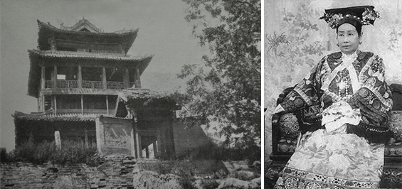
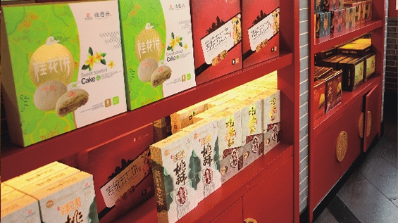

西安市德懋恭食品商店创建于清同治十一年（公元1872年），店主姓李，系清光绪初年咸阳籍进士李岳瑞先生的族侄。李进士家住在西安，本人在北京教皇学。李店主少年是在西安“东福盛”酱醋店当“相公”（学徒），东家见小李好学，制作技艺提高很快，怕日后出师跟他争生意，就在年关之际，把他解雇了。小李在李夫人的帮助下，在西大街南广济街口，买下几间门面房开了酱货店，兼营糕点。开业后，小李逐渐迷上了糕点制作，由于小李勤奋好学，多方收集各地糕点配方，钻研其配料、烘烤技术，不久便已选料精细、制作考究口味纯正、玫瑰清香宜人，制作出陕西名点“水晶饼”。一经上市备受达官贵人及百姓的青睐。李进士高兴之余，就以小李的为人作题，取其注重商业信誉、谦恭待人、勤奋好学、期望事业茂盛发达之意，选用“予懋乃德”之句，给店铺定名为“德懋恭”。之后，德懋恭便以制作经营各式糕点为主，兼营酱货。
清光绪末年八国联军攻陷北京，慈禧太后避难到西安，曾在广济街口闻香停车，品尝了“德懋恭”水晶饼后大加赞赏，遂将这一地方名贵糕点钦点为“贡品”，这一来“德懋恭”水晶饼的身价倍增，闻名遐迩，生意红红火火。它以精湛的制作工艺，卓越的质量和优质的服务、良好的信誉、独特的口味而享誉西北，陕西为最。
2006年12月西安市德懋恭食品商店被中华人民共和国商务部命名的“中华老字号”企业。2007年德懋恭水晶饼制作技艺首批列入陕西省非物质文化遗产名录，是陕西食品糕点行业唯一入选的老字号企业，是十三朝古都西安之深厚文化底蕴的代表之一，被誉为“陕西名片”。德懋恭水晶饼成为世界各国游客西安之行的必选珍品。